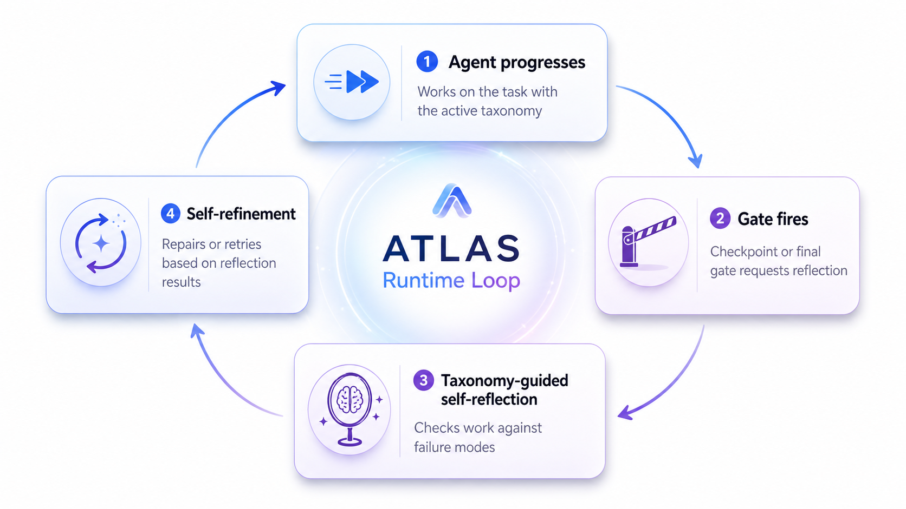
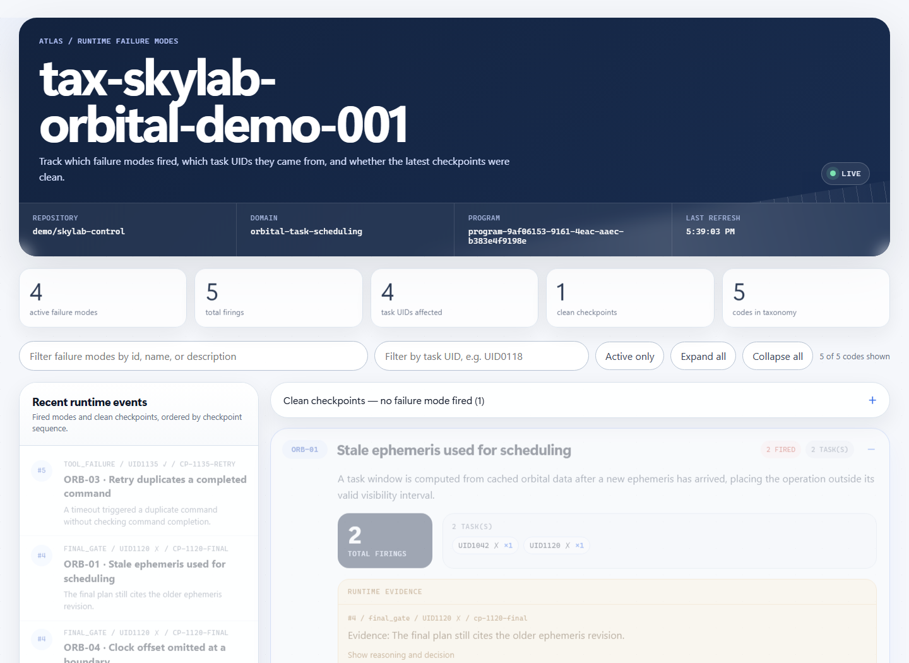

ATLAS Skill docs
Adaptive failure-mode taxonomies for agent pipelines
ATLAS gives an agent a structured way to notice recurring mistakes at runtime, record evidence, and generate or refine task-specific failure-mode taxonomies from completed traces.

Runs start from MAST — the Multi-Agent System failure Taxonomy from “Why Do Multi-Agent LLM Systems Fail?” (Cemri et al., 2025), shipped as a built-in 14-code adaptation. At configured gates the agent reflects on its recent trajectory (Observe → Correlate → Map → Decide), a blocking final gate runs before submission, and completed traces feed taxonomy generation and refinement. ATLAS is not a task solver; your harness keeps owning model execution.
Quickstart
Create an atlas.json in the project that will run the agent.
{
"version": 1,
"trace_output": "./atlas-program",
"trace_root": "~/.atlas-skill/traces",
"store_dir": "~/.atlas-skill/taxonomies",
"atlas_model": "gpt-5",
"inherit": null,
"dashboard": true
}Then install the integration that matches your pipeline.
atlas-claude-install --project-dir . --config atlas.json
atlas-codex-install --project-dir . --config atlas.json
atlas-single-run --config atlas.json --task "..." --model gpt-5atlas_model is used by ATLAS
generation, judging, and refinement. Your task-solving program can use a
separate model or --model.
Configuration
ATLAS uses one dependency-light JSON file. CLI flags override config values. The fields below are the ones most projects touch; the complete reference is CONFIGURATION.md.
| Field | Default | Purpose |
|---|---|---|
trace_output | required | Program-specific folder for traces, evidence, and manifest state. |
store_dir | ~/.atlas-skill/taxonomies | Flat taxonomy store: one JSON file per taxonomy_id. |
generation_threshold | 5 | Warm-up trace count before generating from MAST. |
k_init / k | 10 / 20 | Refinement thresholds after a stored taxonomy is active. |
evidence_export | unset | Optional external JSON snapshot sink for runtime evidence. |
freeze | false | Record traces/evidence but skip generation and refinement. |
Claude Code
Install project-local hooks:
atlas-claude-install --project-dir . --config atlas.jsonConfigure which events fire ATLAS through claude_code.built_in_hooks.
{
"claude_code": {
"built_in_hooks": {
"SubagentStop": false,
"PostToolUse": ["Bash", "Edit", "Write"],
"PostToolUseFailure": {
"enabled": true,
"matchers": ["Bash"]
}
}
}
}Codex
Install project-local Codex hooks:
atlas-codex-install --project-dir . --config atlas.jsonCodex hook selection lives under codex.hooks, keeping adapter policy out of the shared base config.
Single LLM
Use this path for scripts, notebooks, benchmark loops, or direct model calls.
atlas-single-run \
--config atlas.json \
--task "Solve this task" \
--model gpt-5Custom harnesses
A harness should start a session, deliver the selected taxonomy/protocol, invoke gates at meaningful boundaries, and record one canonical trace at session end.
from atlas_runtime import start_session, record_trace, end_session
session = start_session(trace_output="./atlas-program", atlas_model="gpt-5")
# run task, invoke gates, collect trajectory
record_trace(session, trace)
end_session(session)Dashboard
The dashboard is a localhost operations view for runtime failure-mode evidence.

atlas-dashboard \
--trace-output ./atlas-program \
--store-dir ~/.atlas-skill/taxonomiesIt shows active failure modes, total firings, affected task UIDs, recent runtime events, clean checkpoints, and evidence snippets. Use the task UID search to isolate one task, such as UID0118.
python -m examples.dashboard_demo.
Local Web API
The dashboard serves a small local API for monitoring and external evidence viewers.
Returns liveness for the dashboard process and program.
{
"program_id": "program-123",
"status": "ok"
}Returns the current taxonomy, overlaid with program-local runtime evidence.
{
"program_id": "program-123",
"taxonomy_id": "tax-current",
"bound_taxonomy_id": "tax-original",
"is_latest_successor": true,
"repo": "owner/repo",
"domain": "display domain",
"codes": [
{
"code_id": "A.1",
"name": "Skipped verification",
"description": "The agent declared completion without checking the result.",
"fire_count": 2,
"task_firings": [
{"task_id": "session-0118", "label": "UID0118 ✗", "count": 2}
],
"runtime_evidence": [
{
"seq": 4,
"gate": "final_gate",
"task_label": "UID0118 ✗",
"checkpoint_id": "cp-final",
"evidence": "The final answer was submitted before validation.",
"correlate": "The trajectory matches A.1.",
"decide": "Run validation before submitting."
}
],
"fields": [{"name": "category", "value": "Verification"}]
}
],
"clean_checkpoints": []
}Managed-dashboard shutdown endpoint. It requires the private X-ATLAS-Token written into .atlas-dashboard.json.
Traces and learning
When no taxonomy is inherited, ATLAS starts with built-in MAST. After enough warm-up traces accumulate, generation can create a stored taxonomy. Once a stored taxonomy is active, refinement follows program-specific counters.
generation_threshold: default5k_init: default10k: default20generation_stopsandrefinement_stops: defaultfalse
Taxonomy records
A taxonomy is selected only by taxonomy_id. repo and domain are display metadata and route nothing.
{
"taxonomy_id": "my-taxonomy-v1",
"repo": "display-only",
"domain": "display-only",
"codes": [
{
"id": "C-1",
"name": "Observable failure name",
"description": "Task-neutral diagnostic definition.",
"category": "Custom"
}
]
}Inheritance
| Input | Behavior |
|---|---|
| No inherit value | Start from built-in MAST. |
--inherit tax-id | Use that taxonomy ID. Missing IDs error clearly. |
| Interactive picker | Shows all stored taxonomies globally across repos. |
Importing traces
Generate and store a taxonomy from an existing trace folder:
atlas-import-traces --config atlas.json --traces ./tracesCommands
| Command | Purpose |
|---|---|
atlas-find | List or select taxonomies. |
atlas-dashboard | Open the live runtime dashboard. |
atlas-status | Show active taxonomy, pending traces, usage totals, and recent decisions. |
atlas-traces | Inspect, export, or prune trace state. |
atlas-register-taxonomy | Add a taxonomy JSON record to the store. |
atlas-doctor | Validate config, paths, ports, integrations, and model setup. |
Troubleshooting
Run the doctor first:
atlas-doctor --config atlas.json
atlas-status --config atlas.jsonIf the dashboard is empty, check that the run wrote runtime evidence under trace_output and that the active taxonomy ID matches the evidence taxonomy scope.
Full reference pages
This page is a summary. The complete, editable reference lives in the repository (rendered on GitHub):